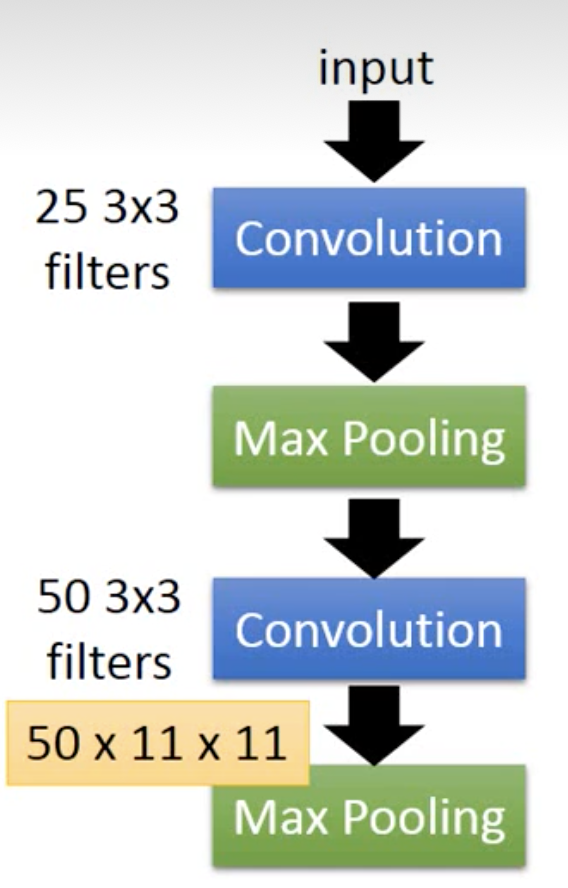

通过梯度上升可视化CNN

文章目录
如果有一个方法，你可以轻松理解这个方法的原理，你可能会觉得他不够intelligent；他必须是你无法理解的东西，你才会觉得他intelligent。
大家常说deep learning就是一个黑盒子，你learn出来以后，根本就不知道为什么是这样子，于是你会感觉它很intelligent，但是其实还是有很多方法可以分析的。
对于两层的CNN来说，要分析第一层的CNN，其实很简单，因为第一层的conv中，每个filter是一个3x3的矩阵，对应图像上的9个像素，所以你只要看这个filter的值，就可以知道这个filter在检测什么东西。
但是第二层的filter是没有什么办法知道他在检测什么东西。因为通过第一层的卷积层和池化层以后，这个filter考虑的不再是像素，就算把weight拿出来，也不知道他在干什么。
what dose CNN learn？
我们知道第二个卷积层输出50个特征图，每个特征图是11x11的矩阵。我们现在取出第K个特征图，对于第K个特征图中的每一个元素，我们使用$a_{ij}^k$表示。现在我们声明一个激活函数$F$，它表示第K个特征图它有多被激活。 $$ F = \sum_{i=1}^{11}\sum_{j=1}^{11}a_{ij}^k $$ 我们input一张image，然后把这个filter和image进行卷积所output的11*11个值全部加起来，当作现在这个filter被activate的程度。
接下来我们想知道第K个filter的作用，那就找一张图像，这张图片可以让第K个filter被激活的程度最大： $$ x = \underset{x}{\arg\max} a^k $$ 现在我们通过梯度上升就可以做到这件事。
原来的做法：我们输入数据，通过前向传播得到输出，然后损失函数求的损失，再反向传播更新参数。
现在我们输入数据，通过前向传播得到输出，然后激活函数求出激活值，再求导直接更新输入数据。
原来使用反向传播是要更新每一层的参数，而现在只用更新输入数据的参数，只用求一次导，当然用不到反向传播了。
实现细节：
1.torch如何得到中间层输出
|
|
2.损失函数实现细节
|
|
3.优化器实现细节
|
|
多说一些，之前对这些概念很模糊，现在梳理一下：
- 参数想要更新声明时必须
requires_grad，然后就不用管了，想要对哪个运算结果求导，运算结果的那个tensor直接backward，参与运算的所有需要求导的tensor就可以通过tensor.grad获得导数。 - 优化器只是拿到需要更新的参数，通过优化算法更新传入的参数。
- 优化器，损失函数，求导是完全解耦的。
4.解码图像
如何将随便的数据映射到0～255之间呢？
- 通过最大最小值缩放到0～1，然后x255，转换成uint8类型。
- 先标准化为均值为0，方差为1的数据，然后同乘0.1，使得方差变为0.1，此时数据高度集中，数据加0.5，再裁减到0～1，再乘255，再裁减并转换成uint8类型。
- torch变换类型：tensor.to(dtype=torch.int)
- numpy转换类型：ndarray.astype(“uint8”)
|
|
5. 主函数
|
|
可视化结果
前两张图片提取的是数据的细节信息，后两张图片提取数据的语义信息(抽象信息)。


总结：
从可视化中可以看出一些端倪：
- 在同一卷积层中会出现少量的可视化卷积核是空白或者相同，这意味着该卷积核对后续的操作并没有产生实际的作用（卷积核冗余），可以通过Dropout这些卷积核以减少网络的计算量和减少过度拟合的可能性。
- 有部分可视化卷积核可以通过旋转平移，获得另外一个可视化卷积核。这也是卷积层的特性这是一个很有趣的研究方向，我们或许可以通过寻找一种旋转不变性的方法来潜在地代替网络层中的其他卷积核，从而压缩积核的数量。
文章作者 杨浩伟
上次更新 2023-02-14